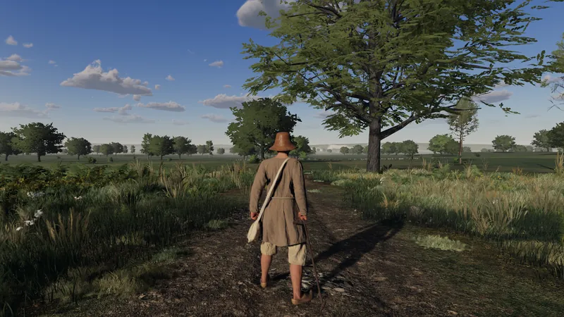

I
Make your name
Travel between Norman towns, earn your keep, and build your reputation. Your choices shape your opportunities, and the obligations that follow.
- Work and trade. Take quests and contracts, trade at markets, cook and craft.
- Take to the road. Buy a horse, hire escorts, forage, and camp beyond the town gates.
- Rise in the world. Acquire holdings and land, or serve a patron.
- Choose your side of the law. Trade lawfully, or steal and smuggle and risk the guards and the prison.